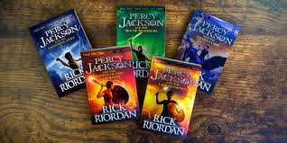

Bienviendo a Percy Jackson

Percy Jackson y los dioses del Olimpo es una serie de libros de aventuras y fantasía escrita por Rick Riordan. La obra está ambientada en los Estados Unidos en la época actual pero está basada en un suceso destacado en la mitología griega.
Consta de cinco libros, así como cinco spin-off.
Más de 45 millones de copias de los libros han sido vendidas en más de 32 países.
Es una obra de Las Crónicas del Campamento Mestizo.
La colección de Percy Jackson
- Series de libros
- Dos peliculas
- Una nueva series en Disney +
- Un musical
Personajes principales
- Percy jackson: el protagonista, tiene doce años. Es hijo de Poesidon
- Annabeth: Tiene doce años, hija de Atenea y desde los siete años esta en el campamento mestizo acompañan a Percy en su misión.
- Grover: es un satiro, mitad cabra, quiere ser buscador para encontrar al Dios de lo salvaje.
- Luke: Hijo de Hermes, es un consejero de su cabaña del campamento, ayuda a Percy, despues se descubre que esta en contra de los dioses
- Quiron: Se hace pasar por Brunner, un profe normal, pero es un centauro y director de actividades del Campamento.